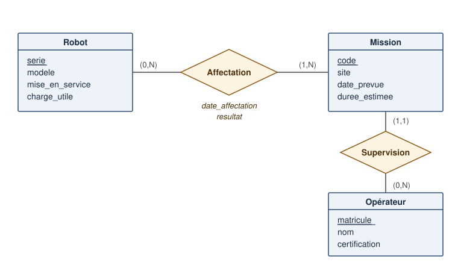
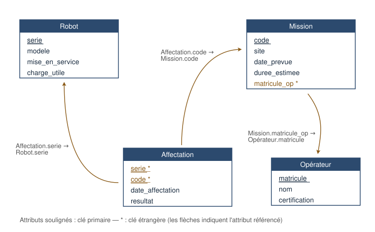

1. Introduction
Objectif du document : Présenter les deux étapes fondamentales de la conception d’une base de données, le modèle conceptuel (entité-association) et le modèle relationnel, avant toute écriture de code SQL.
Les systèmes robotiques produisent et consomment énormément de données structurées : journaux de télémétrie, paramètres de calibration, historiques de missions, inventaires de pièces, états de capteurs. Tant que ces données tiennent dans quelques fichiers CSV, on peut s’en sortir avec des scripts. Mais dès que plusieurs programmes (ou plusieurs personnes) doivent lire et écrire les mêmes informations de façon fiable, les fichiers plats montrent leurs limites : données dupliquées qui divergent, formats incohérents, recherches lentes, aucune garantie en cas d’écriture simultanée. Les bases de données relationnelles répondent à ces problèmes, mais leur efficacité dépend directement de la qualité de leur conception.
Concevoir une base de données ne commence pas par écrire du SQL, pas plus que concevoir un robot ne commence par souder des composants. On procède en étapes successives, du plus abstrait au plus concret. On délimite d’abord le domaine d’application : la portion du monde réel que la base devra représenter. On construit ensuite un modèle conceptuel, indépendant de toute technologie, qui identifie les objets à mémoriser, leurs caractéristiques et les liens entre eux. Ce modèle est ensuite traduit en un modèle relationnel, une structure logique formelle directement implémentable par un système de gestion de bases de données (SGBD). L’implémentation SQL proprement dite, abordée dans les séances suivantes, devient alors presque mécanique.
Ce document suit cette progression : la première partie présente le modèle entité-association et ses quatre notions clés (entités, attributs, liens, identifiants) ; la seconde présente le modèle relationnel (relations, domaines, dépendances fonctionnelles, formes normales et algèbre relationnelle). Un exemple fil rouge - la gestion d’un parc de robots mobiles - accompagne l’ensemble du document.
2. Le modèle conceptuel : entité-association
Objectif de la section : Décrire l’information à mémoriser de façon précise mais indépendante de toute technologie, à l’aide du modèle entité-association.
Le modèle entité-association (EA, aussi appelé entité-relation, d’après l’anglais entity-relationship, proposé par Peter Chen en 1976) est un outil graphique et conceptuel qui décrit la structure d’une base de données avant sa création technique. Son rôle est double : organiser l’information pour éviter les oublis et les incohérences, et servir de support de communication entre les personnes qui conçoivent le système et celles qui l’utiliseront. Un diagramme EA bien fait se lit et se critique sans aucune connaissance en programmation. C’est précisément ce qui en fait un bon outil de validation avec un client ou un collègue d’une autre discipline.
2.1. Domaine d’application
Le domaine d’application correspond au contexte réel que l’on souhaite modéliser : c’est le « monde » que la base de données va représenter. Avant de dessiner quoi que ce soit, il faut le délimiter clairement, car il détermine quelles informations sont pertinentes et lesquelles ne le sont pas. Une bonne façon de procéder est de lister les questions auxquelles la base devra répondre.
Prenons l’exemple qui nous servira tout au long du document : une entreprise exploite un parc de robots mobiles pour des missions d’inspection industrielle. La base de données devra minimalement répondre aux questions suivantes : quels robots sont en service et quelles sont leurs caractéristiques ? Quelles missions ont été effectuées, par quel robot, et avec quel résultat ? Quel opérateur a supervisé chaque mission ? À l’inverse, certaines informations sont volontairement hors du domaine : on ne mémorisera pas la télémétrie brute des robots (qui relève d’un autre système, avec d’autres contraintes de volume) ni la comptabilité de l’entreprise. Cette délimitation est un choix de conception, pas une vérité absolue : le même parc de robots serait modélisé différemment par le service de maintenance et par le service des ventes.
2.2. Entités et classes d’entités
Une entité est un objet ou un concept du domaine d’application que l’on veut mémoriser : quelque chose d’unique et d’identifiable. Le robot portant le numéro de série UGV-2041, la mission d’inspection du 12 mars, l’opératrice au matricule OP-117 sont des entités. Une entité peut être un objet physique (un robot, une pièce de rechange), mais aussi un concept abstrait (une mission, une réservation, un contrat) : ce qui compte est qu’on puisse la distinguer de toutes les autres et qu’on veuille en retenir des informations.
Les entités de même nature, décrites par les mêmes caractéristiques, sont regroupées en classes d’entités : tous les robots forment la classe Robot, toutes les missions la classe Mission, tous les opérateurs la classe Opérateur. La distinction entre classe et entité est exactement celle entre classe et instance en programmation orientée objet : Robot est la classe, le robot UGV-2041 en est une instance. Le diagramme EA ne représente que les classes ; les entités individuelles ne vivront que dans les données. C’est une distinction importante en pratique : si vous vous surprenez à dessiner une boîte « Robot UGV-2041 » dans un diagramme, c’est le signe que vous confondez le modèle (la structure) et son contenu (les données).
Identifier les bonnes classes d’entités est la première étape (et souvent la plus délicate) de la modélisation. Un truc pratique : les classes d’entités correspondent généralement aux noms communs qui reviennent dans la description du domaine (« un robot effectue des missions supervisées par un opérateur »), tandis que les verbes suggèrent des liens entre elles.
2.3. Attributs
Un attribut est une caractéristique d’une classe d’entités : chaque entité de la classe possède une valeur pour chacun des attributs. Pour la classe Robot, on retiendra par exemple le numéro de série, le modèle, la date de mise en service et la charge utile maximale. Pour la classe Mission : un code, un site, une date prévue et une durée estimée. Pour Opérateur : un matricule, un nom et une certification.
Le choix des attributs découle directement du domaine d’application : on ne retient que ce qui sert à répondre aux questions identifiées. La masse du robot est pertinente pour un système de planification logistique, pas nécessairement pour le suivi des missions. Ajouter des attributs « au cas où » alourdit le modèle et la saisie des données sans bénéfice réel. Il est toujours possible d’enrichir le modèle plus tard.
Quelques distinctions utiles. Un attribut est dit atomique (ou simple) si sa valeur n’a pas de structure interne pertinente : une date, un nombre, un code. Il est composite si on veut accéder à ses parties : une adresse (rue, ville, code postal) ou un nom complet (prénom, nom). En pratique, on décompose presque toujours les attributs composites en plusieurs attributs atomiques, car le modèle relationnel (on le verra plus loin) l’exige. Un attribut peut aussi être obligatoire (toute entité a une valeur) ou optionnel (la date de retrait d’un robot encore en service n’existe pas… encore). Enfin, un attribut doit avoir une valeur unique par entité : si un robot peut porter plusieurs capteurs, « capteur » n’est pas un attribut de Robot, mais le signe qu’une classe d’entités Capteur et un lien entre les deux se cachent dans le domaine.
2.4. Liens
Un lien (ou association, ou relation au sens du modèle EA) décrit comment les entités de différentes classes interagissent : un robot effectue une mission, un opérateur supervise une mission, un technicien entretient un robot. Comme le suggèrent ces exemples, les liens correspondent typiquement aux verbes de la description du domaine. Sans liens, la base de données ne serait qu’une collection de listes indépendantes ; ce sont eux qui donnent du sens à l’information et permettent de répondre aux questions croisées (« quelles missions le robot UGV-2041 a-t-il effectuées en mai ? »).
Un lien peut lui-même porter des attributs, lorsque l’information n’appartient en propre ni à l’une ni à l’autre des classes liées. Considérons le lien Affectation entre Robot et Mission : la date d’affectation et le résultat (succès, échec, abandon) ne décrivent ni le robot seul, ni la mission seule, mais bien le couple robot-mission. C’est l’indice classique qu’un attribut appartient à un lien plutôt qu’à une classe d’entités. La plupart des liens sont binaires (ils relient deux classes), mais des liens ternaires ou plus existent ; ils sont rares et on peut généralement les reformuler à l’aide de classes et de liens binaires.
2.4.1. Cardinalités
Déclarer qu’un lien existe ne suffit pas : il faut préciser combien d’entités peuvent participer de chaque côté. C’est le rôle des cardinalités, qu’on exprime ici par un couple (minimum, maximum) attaché à chaque extrémité du lien. La cardinalité se lit en se plaçant du point de vue d’une entité de la classe concernée : « un robot participe à au moins min et au plus max affectations ».
Reprenons le lien Affectation entre Robot et Mission :
-
Côté Robot : un robot peut n’avoir encore effectué aucune mission (un robot neuf), et peut en effectuer plusieurs au fil du temps. Cardinalité : (0,N).
-
Côté Mission : une mission doit être effectuée par au moins un robot (sinon elle n’a pas eu lieu), et certaines missions d’envergure mobilisent plusieurs robots. Cardinalité : (1,N).
Pour le lien Supervision entre Opérateur et Mission :
-
Côté Opérateur : un opérateur peut superviser zéro, une ou plusieurs missions. Cardinalité : (0,N).
-
Côté Mission : chaque mission est supervisée par exactement un opérateur. Cardinalité : (1,1).
En combinant les maximums des deux côtés, on classe les liens en trois familles, qui auront chacune leur traduction propre dans le modèle relationnel : un-à-un (1:1, rare: par exemple un robot et sa station d’accueil dédiée), un-à-plusieurs (1:N, le cas le plus courant: un opérateur supervise plusieurs missions, mais chaque mission a un seul superviseur) et plusieurs-à-plusieurs (N:N: plusieurs robots par mission, plusieurs missions par robot). Les minimums (0 ou 1) expriment quant à eux le caractère optionnel ou obligatoire de la participation.
2.5. Identifiants
Pour retrouver une entité parmi toutes celles de sa classe, il faut pouvoir la désigner sans ambiguïté. Un identifiant est un attribut (ou un groupe minimal d’attributs) dont la valeur est unique pour chaque entité de la classe. Le numéro de série identifie un robot ; le matricule identifie un opérateur ; le code de mission identifie une mission. Par convention, on souligne l’identifiant dans le diagramme EA.
Le nom seul est rarement un bon identifiant (deux opérateurs peuvent s’appeler « Camille Tremblay »), et un groupe d’attributs comme (nom, prénom, date de naissance) reste fragile. Lorsqu’aucun attribut naturel ne convient, on introduit un identifiant artificiel : un numéro attribué arbitrairement, comme le matricule d’un employé ou le numéro d’admission d’un étudiant. C’est une pratique extrêmement courante: la plupart des numéros qui peuplent nos vies (assurance sociale, plaque d’immatriculation, CIP, matricule, …) sont des identifiants artificiels inventés pour les besoins d’une base de données.
Les liens aussi doivent être identifiables : chaque occurrence d’un lien doit être unique. L’identifiant d’un lien est formé de la combinaison des identifiants des classes qu’il relie, complétée au besoin par un ou plusieurs attributs du lien. Une affectation est identifiée par le couple (numéro de série du robot, code de la mission) : le robot UGV-2041 ne peut être affecté qu’une fois à la mission M-2026-042. Si le domaine permettait qu’un même robot soit affecté plusieurs fois à la même mission (par exemple lors de reprises), il faudrait ajouter la date d’affectation à l’identifiant du lien.
2.6. Exemple récapitulatif
La Figure 1 rassemble tout le vocabulaire de la section sur notre exemple : trois classes d’entités avec leurs attributs (identifiants soulignés), deux liens dont un porteur d’attributs, et les cardinalités (min, max) à chaque extrémité.

Ce diagramme se lit comme un ensemble de phrases : « Un robot, caractérisé par son numéro de série, son modèle, sa date de mise en service et sa charge utile, participe à zéro ou plusieurs affectations. Chaque affectation, datée et qualifiée d’un résultat, le lie à une mission. Une mission mobilise un ou plusieurs robots et est supervisée par exactement un opérateur. » Si une de ces phrases contredit la réalité du domaine, le modèle est à corriger. C’est maintenant que c’est facile.
3. Le modèle relationnel
Objectif de la section : Traduire le modèle conceptuel en une structure logique formelle (des relations) et présenter les outils qui permettent d’en évaluer la qualité (dépendances fonctionnelles, formes normales) et de l’interroger (algèbre relationnelle).
Le modèle relationnel, proposé par Edgar F. Codd en 1970, est le fondement mathématique de la quasi-totalité des bases de données utilisées aujourd’hui (PostgreSQL, MySQL, SQLite, Oracle…). Son idée centrale est d’une grande sobriété : toute l’information est représentée par des relations (informellement, des tables) et toutes les opérations sur ces données se décrivent par une petite algèbre dont les opérateurs prennent des relations en entrée et produisent des relations en sortie. Cette base formelle n’est pas qu’une élégance académique : c’est elle qui permet aux SGBD d’optimiser automatiquement les requêtes et de garantir la cohérence des données.
3.1. Relations
Une relation est un ensemble de tuples (ou n-uplets) partageant la même structure. On la décrit par son schéma : un nom et une liste d’attributs, chacun associé à un domaine de valeurs. Par exemple :
Robot(serie, modele, mise_en_service, charge_utile) Mission(code, site, date_prevue, duree_estimee)
Un tuple de la relation Robot est une combinaison concrète de valeurs, comme (UGV-2041, Husky A300, 2024-08-15, 75). On représente naturellement une relation sous forme de table : chaque ligne est un tuple, chaque colonne un attribut.
| serie | modele | mise_en_service | charge_utile |
|---|---|---|---|
UGV-2041 |
Husky A300 |
2024-08-15 |
75 |
UGV-2042 |
Husky A300 |
2024-11-02 |
75 |
UAV-0317 |
Vision M650 |
2025-03-21 |
6 |
L’analogie avec une table est utile mais imparfaite, car une relation est un ensemble au sens mathématique, ce qui impose trois propriétés. Premièrement, pas de doublons : deux tuples identiques sur tous leurs attributs n’en font qu’un. Deuxièmement, pas d’ordre : ni les tuples ni les attributs ne sont ordonnés ; une requête qui dépend de « la première ligne » n’a pas de sens dans le modèle. Troisièmement, valeurs atomiques : chaque case contient une valeur simple : jamais une liste, jamais une table imbriquée. On distingue enfin le schéma de la relation (sa structure, stable dans le temps) de son extension (l’ensemble des tuples présents à un instant donné, qui change au gré des insertions et suppressions), exactement comme on distingue un type de ses valeurs.
L’absence de doublons garantit que toute relation possède au moins une clé : un sous-ensemble d’attributs qui suffit à distinguer chaque tuple. Parmi les clés candidates (les groupes minimaux d’attributs ayant cette propriété), on en désigne une comme clé primaire : c’est l’héritière directe de l’identifiant du modèle EA. Dans les figures, on la souligne ; en texte brut, nous l’encadrerons de tirets bas : Robot(_serie_, modele, mise_en_service, charge_utile).
3.2. Domaines
Le domaine d’un attribut est l’ensemble des valeurs qu’il peut prendre. C’est une notion plus riche qu’un simple type de données : le domaine de charge_utile n’est pas « entier », mais « entier positif exprimé en kilogrammes » ; celui de resultat n’est pas « chaîne de caractères », mais l’ensemble fini {succès, échec, abandon} ; celui de serie est l’ensemble des chaînes respectant le format XXX-NNNN de l’entreprise.
Déclarer précisément les domaines remplit deux fonctions. C’est d’abord une contrainte d’intégrité : le SGBD peut rejeter d’office une charge utile négative ou un résultat inconnu, et ainsi protéger la base contre une partie des erreurs de saisie et des bogues des programmes clients. C’est ensuite une règle de bon sens pour les comparaisons : comparer deux valeurs n’a de sens que si elles proviennent de domaines compatibles. Une jointure qui comparerait un numéro de série à un code de mission est syntaxiquement possible mais sémantiquement absurde ; la discipline des domaines aide à détecter ce genre d’erreur de conception.
En pratique, lors de l’implémentation SQL, chaque domaine sera approximé par un type (INTEGER, VARCHAR, DATE…) complété par des contraintes (CHECK, NOT NULL, clés étrangères). Le domaine conceptuel est le cahier des charges ; le type SQL en est l’implémentation.
3.3. Du modèle conceptuel au modèle relationnel
Le passage du diagramme EA au schéma relationnel suit des règles de traduction presque mécaniques : c’est tout l’intérêt d’avoir soigné le modèle conceptuel.
Chaque classe d’entités devient une relation, ses attributs deviennent les attributs de la relation, et son identifiant devient la clé primaire. Un lien 1:N ne nécessite pas de nouvelle relation : on ajoute, du côté « 1 », la clé de l’autre relation comme clé étrangère. Ainsi, le lien Supervision (chaque mission a exactement un superviseur) se traduit par un attribut matricule_op dans la relation Mission, qui référence la clé primaire d'`Operateur`. Un lien N:N devient une relation à part entière, dont la clé primaire est la combinaison des clés des relations liées, et qui accueille les attributs du lien. Notre schéma complet devient :
Robot(_serie_, modele, mise_en_service, charge_utile) Operateur(_matricule_, nom, certification) Mission(_code_, site, date_prevue, duree_estimee, matricule_op*) Affectation(_serie*_, _code*_, date_affectation, resultat)
où les attributs entre tirets bas forment les clés primaires et les astérisques signalent les clés étrangères. La Figure 2 illustre cette traduction. Remarquez le sort du lien N:N : c’est exactement le piège mentionné dans la section sur les cardinalités. Il serait faux de placer un attribut code_mission dans Robot (un robot a plusieurs missions) ou un attribut serie_robot dans Mission (une mission a plusieurs robots). Seule une relation intermédiaire représente fidèlement le lien.

3.4. Dépendances fonctionnelles
Comment juger qu’un schéma relationnel est bien conçu ? L’outil central est la dépendance fonctionnelle. On dit qu’un groupe d’attributs Y dépend fonctionnellement d’un groupe X, noté X → Y, si la valeur de X détermine celle de Y : deux tuples qui coïncident sur X coïncident nécessairement sur Y. Dans Robot, on a serie → modele (connaître le numéro de série, c’est connaître le modèle) et plus largement serie → modele, mise_en_service, charge_utile. Dans Affectation, on a (serie, code) → date_affectation, resultat, mais ni serie ni code seuls ne déterminent le résultat.
Comme les cardinalités, les dépendances fonctionnelles sont des règles du domaine d’application, pas des observations sur les données : que deux robots du parc aient aujourd’hui la même charge utile ne crée aucune dépendance. La notion de clé se reformule d’ailleurs élégamment avec ce vocabulaire : une clé candidate est un groupe minimal d’attributs dont dépend fonctionnellement tout le schéma.
L’intérêt pratique des dépendances fonctionnelles est de détecter la redondance. Considérons un schéma naïf qui fusionnerait tout dans une seule relation :
Suivi(serie, modele, charge_utile, code, site, resultat)
| serie | modele | charge_utile | code | site | resultat |
|---|---|---|---|---|---|
UGV-2041 |
Husky A300 |
75 |
M-042 |
Aciérie Sorel |
succès |
UGV-2041 |
Husky A300 |
75 |
M-051 |
Raffinerie Lévis |
succès |
UGV-2042 |
Husky A300 |
75 |
M-051 |
Raffinerie Lévis |
échec |
La clé de Suivi est (serie, code), mais modele et charge_utile ne dépendent que de serie, et site ne dépend que de code. Ces dépendances « partielles » engendrent trois familles d'anomalies. Anomalie de modification : changer le site de la mission M-051 exige de modifier plusieurs tuples. En oublier un rend la base incohérente. Anomalie d'insertion : impossible d’enregistrer un robot neuf qui n’a encore aucune mission. Anomalie de suppression : effacer la dernière affectation du robot UGV-2042 fait disparaître du même coup son modèle et sa charge utile. La redondance n’est pas qu’un gaspillage d’espace : c’est une bombe à retardement pour la cohérence des données.
3.5. Formes normales
Les formes normales sont des critères de qualité progressifs qui caractérisent l’absence de redondance d’un schéma au regard de ses dépendances fonctionnelles. On en présente ici les trois premières, suffisantes pour l’essentiel de la pratique.
La première forme normale (1FN) exige que tous les attributs soient atomiques : pas de listes, pas de groupes répétés. Une relation Robot avec un attribut capteurs contenant « lidar, IMU, caméra » viole la 1FN ; la solution est une relation Capteur séparée, liée à Robot. C’est en fait une exigence de base du modèle relationnel lui-même, déjà rencontrée avec les valeurs atomiques.
La deuxième forme normale (2FN) exige, en plus, qu’aucun attribut non-clé ne dépende d’une partie seulement de la clé. C’est précisément le défaut de Suivi : modele dépend de serie seul, une fraction de la clé (serie, code). Le remède est la décomposition : on éclate la relation fautive en plusieurs relations dont chacune regroupe les attributs autour de leur véritable déterminant - ce qui nous ramène aux relations Robot, Mission et Affectation du schéma précédent. Bien décomposée, la base ne mémorise chaque fait qu'une seule fois.
La troisième forme normale (3FN) traque la redondance résiduelle des dépendances transitives : un attribut non-clé qui dépend d’un autre attribut non-clé. Si la relation Mission contenait, en plus du matricule du superviseur, son nom et sa certification, on aurait code → matricule_op → nom : le nom de l’opérateur serait dupliqué dans chacune de ses missions, avec les mêmes anomalies qu’auparavant. La 3FN impose de ne garder dans Mission que matricule_op : les informations de l’opérateur restent dans Operateur, où elles n’apparaissent qu’une fois. Il existe des formes plus strictes (Boyce-Codd, 4FN…), utiles dans des cas particuliers, mais la règle qui résume la 3FN suffit à orienter la conception au quotidien : chaque attribut non-clé doit dépendre de la clé, de toute la clé, et de rien d’autre que la clé.
3.6. Algèbre relationnelle
Une fois les données structurées en relations, comment les interroger ? L'algèbre relationnelle fournit un petit ensemble d’opérateurs qui, chacun, prennent une ou deux relations en entrée et produisent une nouvelle relation en sortie. Cette propriété de fermeture est la clé de la puissance du modèle : puisque le résultat d’un opérateur est une relation, on peut le donner en entrée à un autre opérateur, et composer ainsi des requêtes arbitrairement riches, exactement comme on compose des fonctions en mathématiques.
Les deux opérateurs unaires fondamentaux découpent une relation dans les deux sens. La sélection σcondition(R) garde les lignes (tuples) qui satisfont une condition : σ charge_utile≥50 (Robot) produit la relation des robots porteurs. La projection πattributs(R) garde les colonnes demandées : π serie, modele (Robot) produit la liste des numéros de série et modèles, en éliminant les doublons éventuels, puisque le résultat est une relation comme une autre. S’y ajoute le renommage ρ, qui change le nom d’une relation ou de ses attributs, utile pour clarifier les compositions.
Les relations étant des ensembles, elles héritent des opérateurs ensemblistes classiques, à condition que les deux opérandes aient le même schéma : l'union R ∪ S (les tuples de l’une ou l’autre), la différence R - S (les tuples de R absents de S) et l'intersection R ∩ S (les tuples communs).
Les opérateurs les plus intéressants combinent des relations de schémas différents. Le produit cartésien R × S apparie chaque tuple de R avec chaque tuple de S. Il est rarement utile seul, mais représente la brique de base de la jointure. La jointure naturelle R ⋈ S apparie les tuples de R et de S qui portent les mêmes valeurs sur leurs attributs communs : Robot ⋈ Affectation recolle chaque affectation aux caractéristiques de son robot, via l’attribut commun serie. C’est l’opérateur qui exploite les clés étrangères et qui « recompose » l’information que la normalisation avait soigneusement découpée, sans réintroduire de redondance dans la base, puisque le résultat est calculé à la demande.
La composition de ces opérateurs permet de formuler des questions complètes. « Quels sont les modèles de robots ayant échoué une mission à la Raffinerie Lévis ? » s’écrit :
π modele ( σ site='Raffinerie Lévis' ∧ resultat='échec' ( Robot ⋈ Affectation ⋈ Mission ) )
| Opérateur | Notation | Effet |
|---|---|---|
Sélection |
σcond(R) |
Garde les tuples satisfaisant la condition |
Projection |
πattrs(R) |
Garde les attributs listés (et élimine les doublons) |
Renommage |
ρ |
Renomme une relation ou ses attributs |
Union |
R ∪ S |
Tuples présents dans R ou dans S (schémas identiques) |
Différence |
R - S |
Tuples de R absents de S (schémas identiques) |
Intersection |
R ∩ S |
Tuples présents dans R et dans S (schémas identiques) |
Produit cartésien |
R × S |
Toutes les paires de tuples de R et S |
Jointure naturelle |
R ⋈ S |
Paires de tuples concordant sur les attributs communs |
Si cette écriture vous semble austère, sachez qu’elle est la traduction directe de ce que vous écrirez bientôt en SQL : SELECT correspond à la projection, WHERE à la sélection, JOIN à la jointure. Mieux : c’est en termes d’algèbre relationnelle que le SGBD raisonne en interne. Quand il reçoit une requête SQL, il la convertit en arbre d’opérateurs algébriques, puis exploite les propriétés mathématiques de l’algèbre (commutativité, associativité, distributivité) pour réordonner les opérations et trouver un plan d’exécution efficace. Par exemple, appliquer les sélections avant les jointures peut réduire au plus tôt le volume de données manipulé.
4. Conclusion
Ce document a parcouru la chaîne de conception d’une base de données relationnelle : délimiter le domaine d’application, le décrire par un modèle entité-association (classes d’entités, attributs, liens et cardinalités, identifiants), traduire ce modèle en schéma relationnel (relations, clés, domaines), en vérifier la qualité à l’aide des dépendances fonctionnelles et des formes normales, et enfin l’interroger avec l’algèbre relationnelle.
Le meilleur exercice pour consolider ces notions est de les appliquer à un domaine que vous connaissez bien : modélisez la gestion des équipements de votre groupe technique, votre collection de livres, ou l’organisation d’une compétition de robotique. Identifiez les classes d’entités, posez les cardinalités, traduisez en relations, puis vérifiez vos dépendances fonctionnelles. Les lectures suivantes couvrent l’implémentation concrète de ces schémas en SQL où vous constaterez que tout le travail difficile était ici.